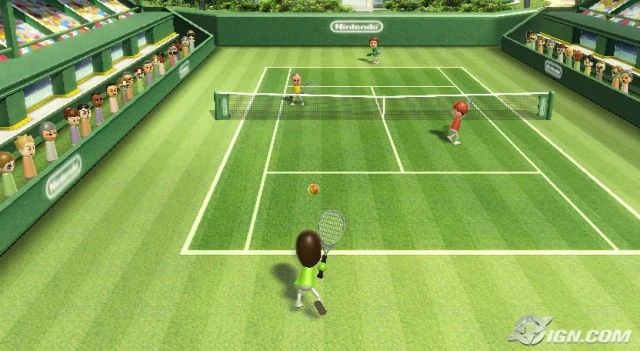
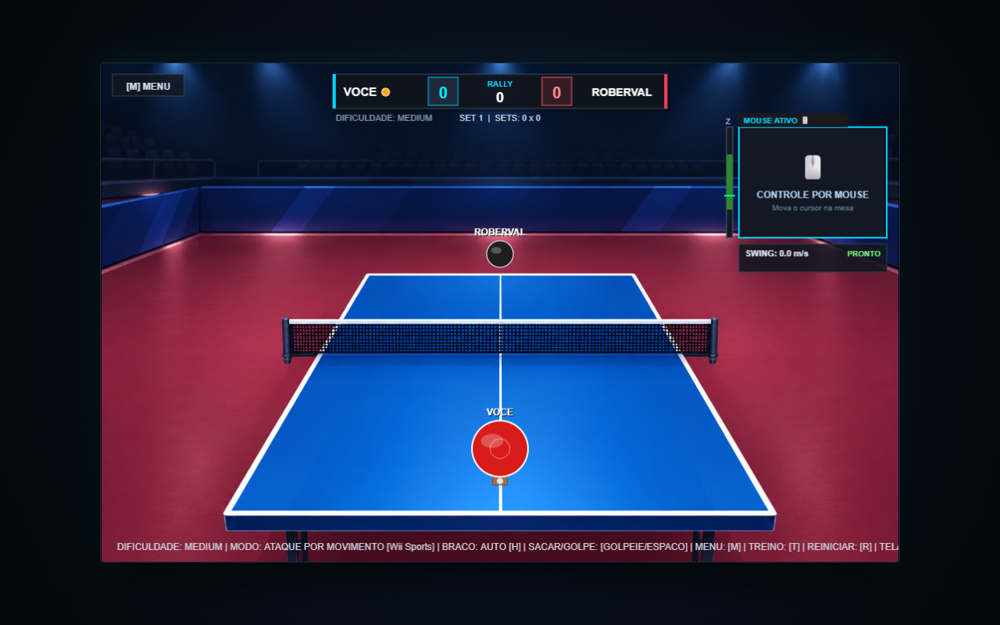
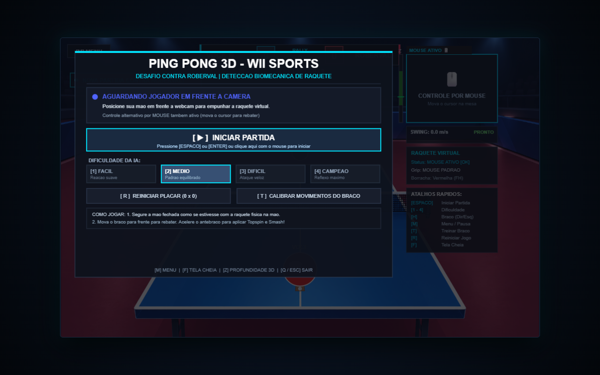
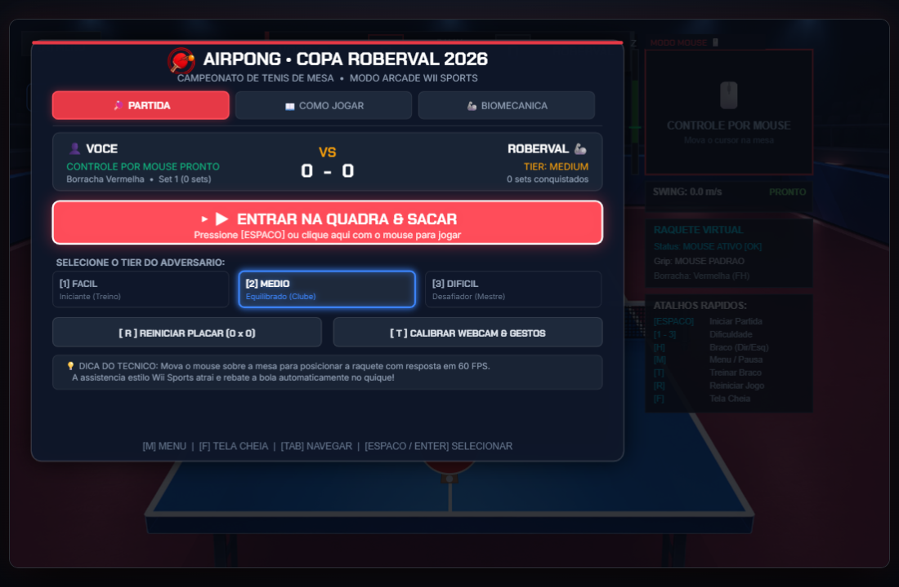

AirPong
A Inspiração: Nintendo Wii Sports
A quebra de paradigmas dos controles por movimento em 2006 e as barreiras de hardware da época.

Sua Mão é a Raquete
Visão Computacional aplicada ao tênis de mesa em tempo real, sem nenhum periférico físico extra.

Principais Tecnologias & Conceitos
Stack moderna selecionada para máxima fluidez a 60 FPS, baixo consumo de CPU e zero dependências pesadas.
O Desafio: Trazer a Vida Real para o Jogo
Como recriar os reflexos rápidos, a firmeza e a sensação física do tênis de mesa sem nenhum controle nas mãos.
Desafio 2: Inteligência de Gestos & Calibração
Eliminando falsos saques acidentais e adaptando a sensibilidade para destros e canhotos.

Jogue Agora
Acesse a demonstração online e o código direto pelo celular ou computador sem instalar nada.
Metodologia SDD
Spec-Driven Development: desenvolvimento guiado por regras claras para garantir um sistema enxuto, testável e sem desperdício.
